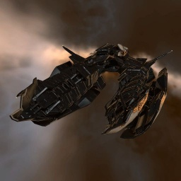

Crucifier

Тип корабля: Фрегат
Государство/Организация: Amarr
Примерная стоимость: 381.000 ISK
Описание
Фрегаты типа «Крусифаер» изначально создавались как экспедиционно-разведывательные корабли, однако сейчас на конвейер поставлена модель, в которой бортовые электронные системы перепрофилированы на ведение наступательного боя. Электронно-вычислительные бортовые системы «Крусифаера» занимают большую часть внутреннего пространства корабля, оставляя мало места для груза или традиционных видов вооружения.
Характеристики
Корпус
Запас прочности корпуса: 350 ед.
Вместимость грузового отсека: 265 м^3
Объем отсека для дронов: 45 м^3
Пропускная способность канала телеуправления: 15 Мбит/с
Масса: 1.064.000 кг
Занимает объем: 28.100,0 м^3 (2.500,0 м^3 в разобранном виде)
Влияние инертности конструкции: 3,35x
Сопротивление корпуса ЭМ-урону: 33 %
Сопротивление корпуса термальному урону: 33 %
Сопротивление корпуса кинетическому урону: 33 %
Сопротивление корпуса фугасному урону: 33 %
Броня
Запас прочности брони: 400 ед.
Сопротивление брони ЭМ-урону: 50 %
Сопротивление брони термальному урону: 35 %
Сопротивление брони кинетическому урону: 25 %
Сопротивление брони фугасному урону: 20 %
Щит
Запас прочности щита: 250 ед.
Влияние на время регенерации щитов: 10 минут и 25 секунд
Сопротивление щита ЭМ-урону: 0 %
Сопротивление щита термальному урону: 20 %
Сопротивление щита кинетическому урону: 40 %
Сопротивление щита фугасному урону: 50 %
Сопротивление средствам РЭП
Сопротивление накопителя нейтрализирующему воздействию: 0 %
Сопротивление воздействию генератору стазис-поля: 0 %
Сопротивление воздействию помех на наводку вооружения: 0 %
Накопитель энергии
Емкость накопителя: 330,0 ГДж
Время востановления заряда: 180 с
Целеуказания
Максимальная дальность захвата цели: 64 км
Максимальное количество захваченных целей: 6
Радиус сигнатуры: 38 м
Разрешающая способность систем захвата цели: 540 мм
Эффективность радарной системы: 14 ед.
Эффективность магнитнометрической системы: -
Эффективность гравиметрической системы: -
Эффективность ладарной системы: -
Двигательная установка
Максимальная скорость: 350 м/с
Скорость в варп-режиме: 5,0 а.е./с.
Служба оснащения
Мощность ЦПУ: 235,0 Тф
Мощность реактора: 27 МВт
Калибровка: 400 ед.
Точки монтажа орудийных установок: 2
Точки монтажа пусковых установок: -
Разъемы большой мощности: 3
Разъемы средней мощности: 4
Разъемы малой мощности: 3
Разъемы под установку тюнинг-модулей: 3